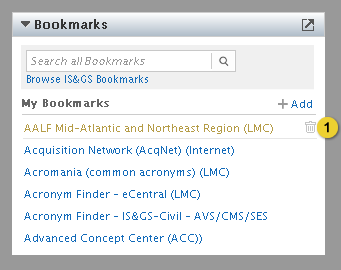

A Lockheed Martin Open Source Project
Community / Docs

Home > Product Specification > Features > Configure a bookmark app
Configure a bookmark app
Configure a feed app
Browse a gallery of apps and themes
Overview
Knowledge workers can browse an a-z listing of intranet bookmarks and can add and remove personal bookmarks.
Conditions of satisfaction
- The knowledge worker must be able to browse an a-z listing of intranet bookmarks.
- The knowledge worker must be able to add and remove a personal bookmark.
- The knowledge worker must be able to save a bookmark from the a-z listing of intranet bookmarks.
- The knowledge worker must be able to perform a keyword search for bookmarks matching on title.
User experience
Empty State

- Allows the knowledge worker to search all bookmarks based on title keywords.
- Links to the canvas view displaying all bookmarks.
- Link to add a new bookmark.
- Links to canvas view displaying the IS&GS A-Z listing of intranet bookmarks. This message only appears when the knowledge worker has no saved bookmarks.
Full State

- Hovering over the link displays a trash icon that allows the knowledge worker to delete the bookmark. When the knowledge worker clicks the icon a pop-up window appears asking the knowledge worker if they are sure they want to delete the bookmark.

- Input box for the bookmark title. Title field supports up to 50 characters.
- Input box for the bookmark URL. URL must be in the following example format: http://www.example.com. Validate that at least one ‘.’ exists in the url.
- Submits the form and closes the form. A feedback message is displayed at the top of the page “New bookmark added”.
- Discards the information entered in the form and closes the form.
Search Results

- Clicking the “x” closes the search results and returns the app to the default view.
- Hovering over the search results displays a link allowing the knowledge worker to save the item to their bookmarks list.
Canvas View

- Clicking the letters display the bookmarks that begin with the selected letter.
- Hovering over a link displays a link allowing the knowledge worker to save the item to their bookmarks list. After the link is saved the text of the link changes to “added”. A feedback message is also displayed at the top of the page: “Link saved to bookmarks” .
Test plans
Knowledge Worker
- Action: Browse an a-z listing of intranet bookmarks
- Verify the a-z listing of intranet bookmarks can be browsed
- Action: Add and remove a personal bookmark
- Verify a personal bookmark can be added
- Verify a personal bookmark can be removed
- Action: Save a bookmark from the a-z listing of intranet bookmarks
- Verify a bookmark can be saved to the knowledge workers personal bookmark list
- Action: Perform a keyword search for bookmarks matching on title
- Verify bookmarks are returned in the search results based on the title keyword entered
Group Coordinator
- Action: Execute same tests as Knowledge Worker
- Verify tests executed successfully
Organization Coordinator
- Action: Execute same tests as Knowledge Worker
- Verify tests executed successfully
Root Organization Coordinator
- Action: Execute same tests as Knowledge Worker
- Verify tests executed successfully
| PAGE CONTENTS
Version 0.9
Documentation is also available for all of the following versions:
1.0 | 1.1 | 1.5 | 2.0
|